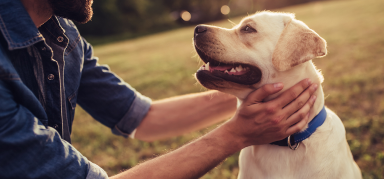
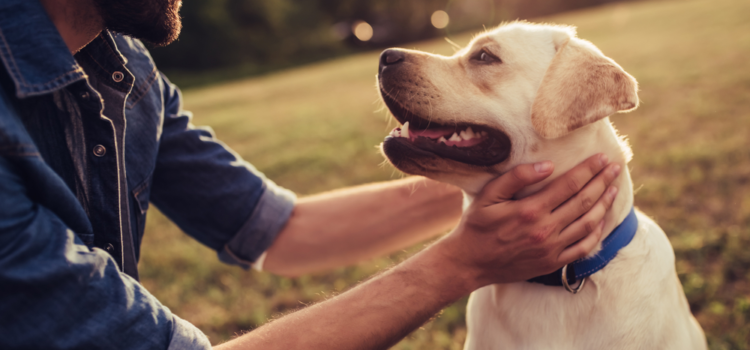

Amamos animais — e essa é a base de tudo o que fazemos.
Somos mais do que um espaço de cuidados para pets: somos um lugar onde cada latido,
ronronar e olhar carinhoso é valorizado. Aqui, cada pet é tratado como único, com respeito,
afeto e profissionalismo.
Nossa história começou com um simples propósito: oferecer o tipo de cuidado que
gostaríamos para os nossos próprios bichinhos. Desde então, crescemos, evoluímos e nos
especializamos, mas nunca perdemos o que nos move: o amor incondicional pelos animais.
Contamos com uma equipe apaixonada, formada por profissionais qualificados e treinados
para atender às necessidades físicas e emocionais dos seus companheiros de quatro patas.
Proporcionar bem-estar, saúde e felicidade para pets,
oferecendo serviços e produtos de qualidade com carinho,
respeito e dedicação a cada animalzinho.
 

Ser referência nacional em cuidados pet,
reconhecida pela excelência no atendimento,
inovação nos serviços e amor pelos animais.

Amor pelos animais: Eles são parte da familia e merecem todo carinho do mundo.
Transparência: Atendimento claro e honesto com tutores e seus companheiros.
Profissionalismo: Equipe treinada e apaixonada pelo que faz.